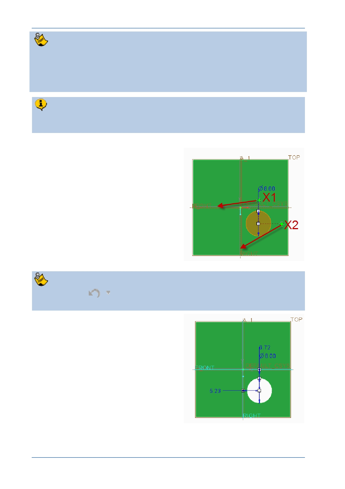

PTC Academic Program
The square white drag handles control the location of the center, diameter and
depth of the hole.
The green diamonds are offset reference handles and control the location of the
hole ’s center relative to where the diamonds are placed.
You will drag the green diamonds onto the RIGHT and FRONT datum planes to
use these as references for the location of the hole center.
5. Locating the hole using offset reference
handles:
Drag one of the green offset reference
handles X1, to datum plane FRONT,
when the plane pre-highlights, release
the mouse button.
Drag the other offset reference handle
X2 onto datum plane RIGHT .
It is easy snap a drag handle onto the wrong reference. If this happens, either
click Undo
or drag the handle to the intended reference.
You will now see dimensions between each
datum plane and the center of the hole.
To locate the hole at the center of the cube,
you could edit both linear dimensions to be
zero but a better method is to change the
offset references from a dimension value to
Align.
© 2012 PTC
Creo Parametric 2.0 Primer
Page 35